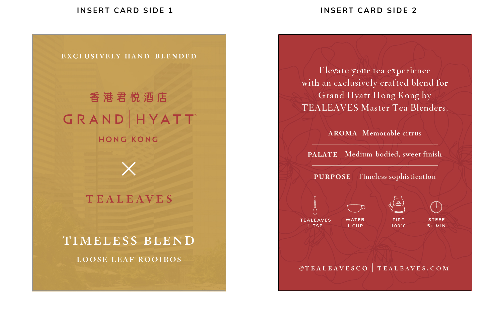
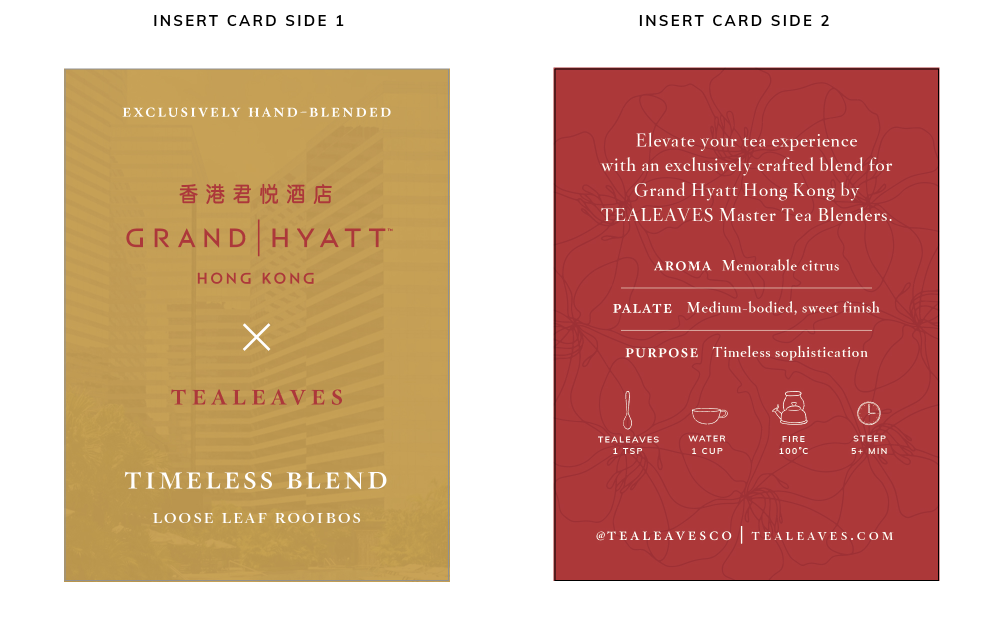

'HOOLIGANG'
Motion Graphic
A kinetic typography project assigned as a first-year introduction to After Effects to the song 'HOOLIGANG' by Joey Valence & Brae.
Purpose
Course project
Tools
After Effects, Illustrator
Timeline
November, 2024
Role
Motion, Graphics
Team
Solo
Purpose
Course project
Tools
After Effects, Illustrator
Timeline
November, 2024
Role
Motion, Graphics
Team
Solo
Objective
Create an original packaging design to celebrate the 35th anniversary of the Grand Hyatt Hong Kong. This product holds the possibility of being offered as a gift to spread prosperity, good fortune, and joy. Design must follow the Grand Hyatt Hong Kong and TEALEAVES design guidelines.
Design Process
1. Research & Ideation
THEME: Legendary, Luxury, Timeless, Youthful
TEA FLAVOR PROFILE: Vanilla rooibos, bergamot, orange zest, tangerine


LADYBUG IMAGERY: There is a belief that the sighting of a ladybug foreshadows a bout of good luck, and can represent new beginnings, and so my initial ideas included ladybugs so that anyone who opens this product would gain that "bout of good luck".
HONG KONG ORCHID IMAGERY: Flora from the Hong Kong Orchid Tree serves as a symbol not only beauty and elegance, but also of Hong Kong itself. This flower is featured on the Hong Kong flag, as well as their coins.
The gestural flowers are organized into a circular rhythmic pattern to reference the cycle of growth, made of an even 8 flowers (the client requested to consider the number "8" while formatting).

2. Mockups & Critque
Throughout this design process I continuously seeked input and critique from both designers within TEALEAVES and from the contact at Grand Hyatt.
This input pushed the design through multiple iterations (especially for the interior design).
The exterior design was positively received first time around (a very rare occurence!), so the second version consists of only a colour switch.
The interior became more simplified as the versions progressed. Initial design included orange slices (to compliment the teas orange zest and tangerine flavours) and ladybugs (to symbolize good luck), however both were removed in the final design.

In the end, the main focus of this design became the Hong Kong orchid, with a simplified colour palette of red and gold.
3. Outcome

 

Takeaways
Through this project, I learnt how to use After Effects basics to create kinetic typographic motion graphics.
When I do more motion graphics work, I plan spend more time on focusing on small details, since I believe there could be better flow/motion in the actions. I also need to review using the camera function within After Effects, to allow the digital space to feel 3D instead of having a static camera. I hope to do more projects such as this, as it was satisfying to create and I know I have much to learn!